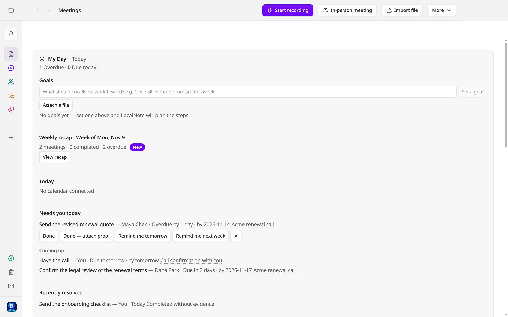

▣
Walk in prepared
Pre-meeting briefs bring up relevant decisions, people and unanswered questions.
LocalNote prepares you before each meeting, tracks every promise made in it, warns you when a decision changes, and has the follow-up and the document ready when it ends — all on your own computer. No cloud, no meeting bot, no account.

Most meeting tools stop at the notes — then the promises, the changes and the follow-ups quietly evaporate. LocalNote is built for the part after the meeting: less preparation, fewer forgotten promises, and less post-meeting admin.
Pre-meeting briefs bring up relevant decisions, people and unanswered questions.
Track commitments and examine decisions with links to their original source.
Draft follow-ups, notes and documents without copying details between apps.
Projects run on paper — a statement of work, a plan, an agreement. Then meetings happen, and the paper quietly stops matching what was decided. Work Guardian keeps the two in step.
Bring in the project's documents and mark the copy that counts as approved. Every older copy is kept — and the approved copy is never edited, by anyone.
Scope that crept, dates that moved, owners that changed, an approval that isn't in the records, work waiting on work that's late — each flag quotes both sides, word for word, so you can judge it yourself.
Guardian drafts the clarification note or the corrected file. Your approval fits that one exact file — if the file changes, the approval stops working and Guardian tells you why, in plain words.
And a ledger keeps "done" honest — every step from Proposed to Acknowledged, marked as verified by the app or attested by you, never blurred. See how Work Guardian works →
Full access for 30 days · No card, no account
Notes are only the middle of the job. LocalNote now closes the loop — with the other side of the meeting, in every app you write in, around the calendar you already keep, and in the files where approved work belongs.
LocalNote packs a meeting's decisions — one to five, each with the exact words behind it — into a single file you hand to the other side. They answer in a file of their own: confirm, correct, dispute or decline. No install, no account, and no LocalNote server in between.
Select text in any app on your Mac, press a shortcut, and rewrite it on-device — improve, shorten, expand, change the tone, translate. The original stays untouched until you press Replace, and a replacement is read back and checked before it counts.
Your promises become focus blocks fitted around the calendar already on your Mac. The plan is proposed, never imposed — you approve the exact blocks before anything is written, and free time is never invented.
When an approved change is meant to land in one of your project files, LocalNote writes it — then reads the file back and shows you the receipt: verified, failed, or honestly uncertain. Never blurred. The same path keeps a project's own task file in step with its meetings, and turns agreed extra work into a change order — priced exactly, and never billable until you approve it.
All four are off until you switch them on, and all four stay on your computer. How confirmations work → · Writing, anywhere → · Your day, planned → · Landed & verified →
Most apps ask you to trust their privacy policy. LocalNote is built so you don't have to.
No sign-up, no analytics, no tracking. There is no LocalNote server holding your meetings — because there is no LocalNote server.
After the one-time model download, turn off your Wi-Fi — or block LocalNote in your firewall. Recording, notes, search and briefs all keep working. The only optional connection is an update check, and Settings lets you switch that off. LocalNote also keeps a log of every connection it makes, right inside the app — and you can export it as an audit report whenever someone asks.
Meetings and notes sit in a folder on your computer, and you can export everything at any time. If LocalNote disappeared tomorrow, your data would still be on your machine — readable, exportable, yours.
LocalNote is in private testing, built by an independent developer. You won't find fake reviews or invented user numbers on this page — when the first real users speak, their words will appear here.
This is the check LocalNote runs on its own summaries: every claim is matched against the transcript, and anything the meeting never backed is stamped UNCONFIRMED — in the open, never quietly dropped. It is loaded with a fictional example — one invented deadline, one invented person, two honest claims — so press the button and watch where the stamps land. Then paste in a summary of your own, from any AI notetaker.
The example is fictional. The check compares words, not meaning — a loose paraphrase can be stamped UNCONFIRMED when it shares too few words with anything actually said. What this check can — and can't — do →
In LocalNote, every meeting gets this check — automatically.
Join the waitlist →Granola and Otter send your meetings to their cloud. Yogurt and NoteOwl keep them on your device, like LocalNote — and Yogurt is even free. But notes were never the hard part. None of them prepare you before a meeting, track every promise until it's done, warn you when a decision changes, or prove that nothing left your computer.
| Granola | Otter | NoteOwl | Yogurt | LocalNote | |
|---|---|---|---|---|---|
| Where your meetings live | Their cloud | Their cloud | Your Mac | Your computer | Your computer |
| Works on | Mac & Windows | Web & mobile | Mac only | Mac, Windows & Linux | Mac & Windows |
| Ask across all your meetings, with sources | Yes | Yes | Yes | Yes | Yes |
| A brief ready before your meeting | — | — | — | — | Yes |
| Promises tracked until they're done | In the notes only | Action items only | A commitments board | Next steps only | Yes — with evidence and proof |
| Warns you when a decision changes | — | — | — | — | Yes |
| Checks project documents against your meetings, and proposes the fix | — | — | — | — | Yes — both sides quoted |
| Privacy you can verify — a log of every connection, plus an audit report | — | — | — | — | Yes |
| Consent log, redaction & retention controls | — | — | — | — | Yes |
| Ready-made packs for your profession | — | — | — | — | Yes |
| Gets a decision confirmed by the other side — the answer bound to the exact words | — | — | — | — | Yes |
| Rewrites selected text inside other apps, on-device | Dictation only | — | Dictation only | — | Yes — Mac first |
| Price | Free keeps 30 days of history, then $14/mo | Free keeps your 25 latest meetings, Pro $16.99/mo | $79 once | Free, open source | 30 days free, then one simple paid plan |
Compared from each maker's public pages, November 2026. Granola, Otter, NoteOwl and Yogurt are products of their respective owners; LocalNote is not affiliated with or endorsed by them.
Local recording and AI inference for core workflows; selected integrations have explicit access controls.
Initial model downloads require internet. Connected AI clients may send approved retrieved content to their own services. Read our privacy design →

Jatinder Pal Singh (JP)
Ex-Apple · AI leader
I'm JP, and I built LocalNote. I've spent my career building AI products and leading engineering teams — work where you sit in meetings all day. Which is exactly how this started.
One of my meetings got recorded by a cloud tool, and afterwards I had no way to check what it had kept, where it had gone, or who could listen to it. That bothered me enough to build my own. Not another recorder — I wanted the part after the meeting handled: what was promised, the follow-up, the document. Ready when the meeting ends, and nothing goes out without my approval. All of it on my own computer.
It's coming to phones next — the same LocalNote, in your pocket. You just talk to it. It records and transcribes on the phone itself, answers questions from your own meetings, and reminds you what you promised. And when your phone and computer are near each other, they sync directly, device to device. No cloud in between, ever.
No account. No server holding your meetings. Nobody listening in but you.
Meetings happen away from your desk. LocalNote for iPhone is in development — the same on-device assistant, launching together with the Mac app, and keeping in step with it directly over your own Wi-Fi, never through a cloud.
Join the waitlist - the first public release comes with a full 30-day free trial.